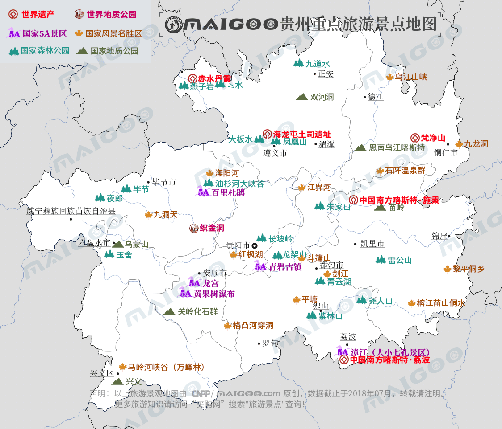

| | | | | |
| - | - | - | - | - |
|<b>别名</b>|贵、黔||<b>著名景点</b>|黄果树瀑布、梵净山、织金洞、万峰林、千户苗寨|
|<b>行政区类别</b>|省||<b>机 场</b>|贵阳龙洞堡国际机场、遵义新舟机场、铜仁凤凰机场等|
|<b>所属地区</b>|中国西南地区||<b>火车站</b>|贵阳北站、遵义站、安顺西站等|
|<b>下辖地区</b>|6个地级市、3个自治州||<b>车牌代码</b>|贵A～贵J|
|<b>电话区号</b>|0851～0859||<b>GDP</b>|13500亿元（2017年）|
|<b>邮政区码</b>|830000-840000||<b>人均GDP</b>|38000元（2017年）|
|<b>地理位置</b>|中国西南||<b>著名高校</b>|贵州大学、贵州师范大学等|
|<b>面 积</b>|17.6167万平方千米||<b>省委书记</b>|孙志刚|
|<b>人 口</b>|3581万人（2017年）||<b>主要民族</b>|汉、苗、布依、侗、水等|
|<b>方 言</b>|西南官话||<b>行政区划代码</b>|520000|
|<b>气候条件</b>|亚热带湿润季风气候||<b>省 长</b>|谌贻琴|
| <b>贵州生活文化</b> | <b>贵州特色文化</b> | <b>贵州曲艺文化</b> | <b>贵州建筑文化</b> | <b>贵州宗教文化</b> |
| - | - | - | - | - |
| <a href="javascript:;" onclick="live(this);">习俗/民俗</a> | <a href="javascript:;" onclick="feature(this);">水西文化</a> | <a href="javascript:;" onclick="art(this);">贵州黔剧</a> | <a href="javascript:;" onclick="building(this);">贵州吊脚楼</a> | - |
| <a href="javascript:;" onclick="live(this);">方言文化</a> | <a href="javascript:;" onclick="feature(this);">贵州酒文化</a> | <a href="javascript:;" onclick="art(this);">苗族剪纸</a> | <a href="javascript:;" onclick="building(this);">侗乡风雨桥</a> | - |
| <a href="javascript:;" onclick="live(this);">节日文化</a> | <a href="javascript:;" onclick="feature(this);">夜郎文化</a> | <a href="javascript:;" onclick="art(this);">安顺蜡染</a> | - | - |
| <a href="javascript:;" onclick="live(this);">嫁娶文化</a> | - | - |-|-|
| <a href="javascript:;" onclick="live(this);">饮食文化</a> | - | -|-|-|
| <a href="javascript:;" onclick="live(this);">贵州禁忌</a> | - |-| -|-|
--
## <i class="fa fa-file-text-o"></i>&nbsp;目录（Table of Contents）
+ [I. 总路线图（暂无）](#one)
+ [II. 景点](#two)
+ [III. 路线规划（暂无）](#three)
<h2 id="two"><i class="fa fa-star-o"></i>&nbsp;景点</h2>
